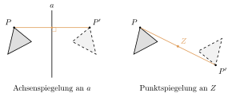

Aufgabe 3.2
Welche Analogien bestehen zwischen den Eigenschaften der Achsenspiegelung und der Halbdrehung, so dass Letztere es verdient, als «Punktspiegelung» bezeichnet zu werden?
Womit anfangen? Führen Sie beide Abbildungen zweimal hintereinander aus und sehen Sie nach, wo Sie landen.
- Was geschieht mit einem Punkt, wenn Sie zweimal spiegeln?
- Was geschieht mit der Strecke zwischen Punkt und Bildpunkt?
- Welche Punkte bleiben jeweils fest — und wie viele sind es?
Was man im Bild sieht

Die farbige Strecke ist beide Male dieselbe Figur: die Verbindung von $P$ mit seinem Bildpunkt $P'$. Links wird sie von der Achse halbiert (und steht senkrecht auf ihr), rechts vom Zentrum. Deshalb kommt man beide Male durch nochmaliges Spiegeln zurück — und deshalb trägt die Halbdrehung den Namen «Punktspiegelung».
Beide sind Kongruenzabbildungen
- Beide erhalten Streckenlängen und Winkelgrössen
- Form und Grösse der Figuren bleiben unverändert
Beide halbieren die Verbindungsstrecke
- Achsenspiegelung: Die Spiegelachse halbiert die Verbindungsstrecke zwischen Original- und Bildpunkt und steht senkrecht darauf
- Punktspiegelung: Das Spiegelzentrum ist der Mittelpunkt der Verbindungsstrecke zwischen Original- und Bildpunkt
Zweimal angewendet kommt man zurück — die Hauptanalogie
- Spiegelt man den Bildpunkt noch einmal, liegt er wieder auf dem Original
- Das gilt für jeden Punkt der Ebene, nicht nur für einzelne
- Genau das macht aus einer Abbildung eine «Spiegelung»
Die Fixpunkte unterscheiden sich
- Achsenspiegelung: Alle Punkte auf der Achse sind Fixpunkte
- Punktspiegelung: Nur das Spiegelzentrum ist Fixpunkt
Im Video: Etappe 4 · Schultypische Beispiele bei 4:03